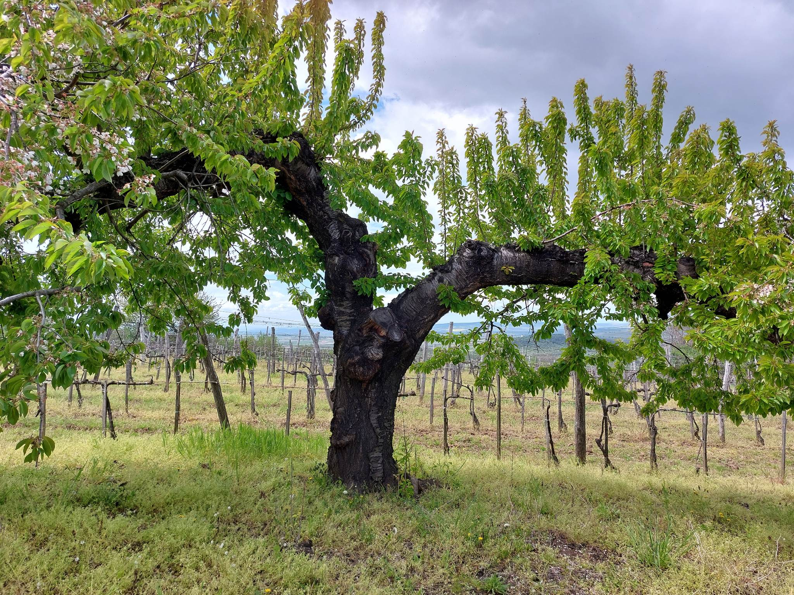
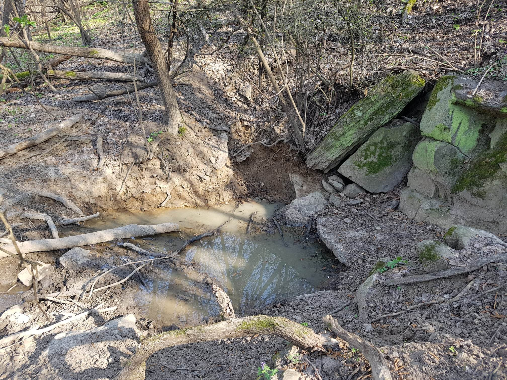

<!DOCTYPE html>
<html>
<head>
    
    <meta http-equiv="content-type" content="text/html; charset=UTF-8" />
    
        <script>
            L_NO_TOUCH = false;
            L_DISABLE_3D = false;
        </script>
    
    <style>html, body {width: 100%;height: 100%;margin: 0;padding: 0;}</style>
    <style>#map {position:absolute;top:0;bottom:0;right:0;left:0;}</style>
    <script src="https://cdn.jsdelivr.net/npm/leaflet@1.9.3/dist/leaflet.js"></script>
    <script src="https://code.jquery.com/jquery-3.7.1.min.js"></script>
    <script src="https://cdn.jsdelivr.net/npm/bootstrap@5.2.2/dist/js/bootstrap.bundle.min.js"></script>
    <script src="https://cdnjs.cloudflare.com/ajax/libs/Leaflet.awesome-markers/2.0.2/leaflet.awesome-markers.js"></script>
    <link rel="stylesheet" href="https://cdn.jsdelivr.net/npm/leaflet@1.9.3/dist/leaflet.css"/>
    <link rel="stylesheet" href="https://cdn.jsdelivr.net/npm/bootstrap@5.2.2/dist/css/bootstrap.min.css"/>
    <link rel="stylesheet" href="https://netdna.bootstrapcdn.com/bootstrap/3.0.0/css/bootstrap.min.css"/>
    <link rel="stylesheet" href="https://cdn.jsdelivr.net/npm/@fortawesome/fontawesome-free@6.2.0/css/all.min.css"/>
    <link rel="stylesheet" href="https://cdnjs.cloudflare.com/ajax/libs/Leaflet.awesome-markers/2.0.2/leaflet.awesome-markers.css"/>
    <link rel="stylesheet" href="https://cdn.jsdelivr.net/gh/python-visualization/folium/folium/templates/leaflet.awesome.rotate.min.css"/>
    
            <meta name="viewport" content="width=device-width,
                initial-scale=1.0, maximum-scale=1.0, user-scalable=no" />
            <style>
                #map_862936ecc480502f1575ff121e23db23 {
                    position: relative;
                    width: 100.0%;
                    height: 100.0%;
                    left: 0.0%;
                    top: 0.0%;
                }
                .leaflet-container { font-size: 1rem; }
            </style>
        
</head>
<body>
    
    
            <div class="folium-map" id="map_862936ecc480502f1575ff121e23db23" ></div>
        
</body>
<script>
    
    
            var map_862936ecc480502f1575ff121e23db23 = L.map(
                "map_862936ecc480502f1575ff121e23db23",
                {
                    center: [48.129591, 21.379145],
                    crs: L.CRS.EPSG3857,
                    zoom: 15,
                    zoomControl: true,
                    preferCanvas: false,
                }
            );

            

        
    
            var tile_layer_c28e0d9066896105ccb1b9edfc5b770c = L.tileLayer(
                "https://{s}.tile.openstreetmap.org/{z}/{x}/{y}.png",
                {"attribution": "Data by \u0026copy; \u003ca target=\"_blank\" href=\"http://openstreetmap.org\"\u003eOpenStreetMap\u003c/a\u003e, under \u003ca target=\"_blank\" href=\"http://www.openstreetmap.org/copyright\"\u003eODbL\u003c/a\u003e.", "detectRetina": false, "maxNativeZoom": 18, "maxZoom": 18, "minZoom": 15, "noWrap": false, "opacity": 1, "subdomains": "abc", "tms": false}
            );
        
    
                tile_layer_c28e0d9066896105ccb1b9edfc5b770c.addTo(map_862936ecc480502f1575ff121e23db23);
    
            var poly_line_630ccd55045fdf2aa806b98a620687ec = L.polyline(
                [[48.130122, 21.349125], [48.131676, 21.351469], [48.132458, 21.35224], [48.135527, 21.355181], [48.136436, 21.361686], [48.136189, 21.363743], [48.136491, 21.365454], [48.136277, 21.366416], [48.135153, 21.370333], [48.134735, 21.371402], [48.132732, 21.378573], [48.130693, 21.379588], [48.129591, 21.379145]],
                {"bubblingMouseEvents": true, "color": "blue", "dashArray": null, "dashOffset": null, "fill": false, "fillColor": "blue", "fillOpacity": 0.2, "fillRule": "evenodd", "lineCap": "round", "lineJoin": "round", "noClip": false, "opacity": 1.0, "smoothFactor": 1.0, "stroke": true, "weight": 3}
            ).addTo(map_862936ecc480502f1575ff121e23db23);
        
    
            var marker_c9a5c602a0c24fcf2d29e899aaa60ff0 = L.marker(
                [48.130122, 21.349125],
                {}
            ).addTo(map_862936ecc480502f1575ff121e23db23);
        
    
            var icon_401d70b09711ac21db7953f67202ac12 = L.AwesomeMarkers.icon(
                {"extraClasses": "fa-rotate-0", "icon": "leaf", "iconColor": "white", "markerColor": "blue", "prefix": "glyphicon"}
            );
            marker_c9a5c602a0c24fcf2d29e899aaa60ff0.setIcon(icon_401d70b09711ac21db7953f67202ac12);
        
    
        var popup_20c9dcab6b8c859cde126529897865e7 = L.popup({"maxWidth": 400});

        
            
                marker_c9a5c602a0c24fcf2d29e899aaa60ff0.once('click', function() {
                    popup_20c9dcab6b8c859cde126529897865e7.setContent($(`<div id="html_22b634451d1b57e39c870855cbfcf9e8" style="width: 100.0%; height: 100.0%;"><div>                     <h1>End of the Village<h1/>                                      <div>             </div>`)[0]);
                });
            
        

        marker_c9a5c602a0c24fcf2d29e899aaa60ff0.bindPopup(popup_20c9dcab6b8c859cde126529897865e7)
        ;

        
    
    
            var marker_1108ee3ec8033cae773651bfa4869fca = L.marker(
                [48.131676, 21.351469],
                {}
            ).addTo(map_862936ecc480502f1575ff121e23db23);
        
    
            var icon_e685afd8f9a37c7c33dfb65f3cdaf1e3 = L.AwesomeMarkers.icon(
                {"extraClasses": "fa-rotate-0", "icon": "leaf", "iconColor": "white", "markerColor": "blue", "prefix": "glyphicon"}
            );
            marker_1108ee3ec8033cae773651bfa4869fca.setIcon(icon_e685afd8f9a37c7c33dfb65f3cdaf1e3);
        
    
        var popup_c9f64b6621ade836e437a7db06bca7b1 = L.popup({"maxWidth": 400});

        
            
                marker_1108ee3ec8033cae773651bfa4869fca.once('click', function() {
                    popup_c9f64b6621ade836e437a7db06bca7b1.setContent($(`<div id="html_cba31b57ccf3f9f554475136ea516940" style="width: 100.0%; height: 100.0%;"><div>                     <h1>First Hilltop<h1/>                                      <div>             </div>`)[0]);
                });
            
        

        marker_1108ee3ec8033cae773651bfa4869fca.bindPopup(popup_c9f64b6621ade836e437a7db06bca7b1)
        ;

        
    
    
            var marker_fdfa205e7a4995d4f6f0adad62700960 = L.marker(
                [48.132458, 21.35224],
                {}
            ).addTo(map_862936ecc480502f1575ff121e23db23);
        
    
            var icon_894fb0be315005e7a3c246eb307bc53d = L.AwesomeMarkers.icon(
                {"extraClasses": "fa-rotate-0", "icon": "leaf", "iconColor": "white", "markerColor": "blue", "prefix": "glyphicon"}
            );
            marker_fdfa205e7a4995d4f6f0adad62700960.setIcon(icon_894fb0be315005e7a3c246eb307bc53d);
        
    
        var popup_ba01aacc522003fb285e28c57f1b3373 = L.popup({"maxWidth": 400});

        
            
                marker_fdfa205e7a4995d4f6f0adad62700960.once('click', function() {
                    popup_ba01aacc522003fb285e28c57f1b3373.setContent($(`<div id="html_e84fdf7ca4725bfe231214fe25391f7c" style="width: 100.0%; height: 100.0%;"><div>                     <h1>The Loess Road<h1/>                                      <div>             </div>`)[0]);
                });
            
        

        marker_fdfa205e7a4995d4f6f0adad62700960.bindPopup(popup_ba01aacc522003fb285e28c57f1b3373)
        ;

        
    
    
            var marker_50a66d2f51d9b4ef8b9e0e9419f07a2f = L.marker(
                [48.135527, 21.355181],
                {}
            ).addTo(map_862936ecc480502f1575ff121e23db23);
        
    
            var icon_6cf47b2c09d7a1fe1dbd074e1dfd79e3 = L.AwesomeMarkers.icon(
                {"extraClasses": "fa-rotate-0", "icon": "leaf", "iconColor": "white", "markerColor": "blue", "prefix": "glyphicon"}
            );
            marker_50a66d2f51d9b4ef8b9e0e9419f07a2f.setIcon(icon_6cf47b2c09d7a1fe1dbd074e1dfd79e3);
        
    
        var popup_f06095a7f8dd1910b749fa76eef57203 = L.popup({"maxWidth": 400});

        
            
                marker_50a66d2f51d9b4ef8b9e0e9419f07a2f.once('click', function() {
                    popup_f06095a7f8dd1910b749fa76eef57203.setContent($(`<div id="html_252428224ae007ff6e9d6303c8ebc9bc" style="width: 100.0%; height: 100.0%;"><div>                     <h1>The Open Road<h1/>                                      <div>             </div>`)[0]);
                });
            
        

        marker_50a66d2f51d9b4ef8b9e0e9419f07a2f.bindPopup(popup_f06095a7f8dd1910b749fa76eef57203)
        ;

        
    
    
            var marker_0fb547da51656d2b09b1e730adee5045 = L.marker(
                [48.136436, 21.361686],
                {}
            ).addTo(map_862936ecc480502f1575ff121e23db23);
        
    
            var icon_860b2bd3e50cd560a283440ee853fd03 = L.AwesomeMarkers.icon(
                {"extraClasses": "fa-rotate-0", "icon": "", "iconColor": "white", "markerColor": "blue", "prefix": "glyphicon"}
            );
            marker_0fb547da51656d2b09b1e730adee5045.setIcon(icon_860b2bd3e50cd560a283440ee853fd03);
        
    
        var popup_b923b24e0da87100a334a8edf3ef5e49 = L.popup({"maxWidth": 400});

        
            
                marker_0fb547da51656d2b09b1e730adee5045.once('click', function() {
                    popup_b923b24e0da87100a334a8edf3ef5e49.setContent($(`<div id="html_eb8fd0e9e41848195d0426c476dc46f8" style="width: 100.0%; height: 100.0%;"><div>                     <h1>The Double Road<h1/>                                      <div>             </div>`)[0]);
                });
            
        

        marker_0fb547da51656d2b09b1e730adee5045.bindPopup(popup_b923b24e0da87100a334a8edf3ef5e49)
        ;

        
    
    
            var marker_0367f1223ba5b606866118dbd5edc982 = L.marker(
                [48.136189, 21.363743],
                {}
            ).addTo(map_862936ecc480502f1575ff121e23db23);
        
    
            var icon_742d330f0756bac6b1bede4efc55a442 = L.AwesomeMarkers.icon(
                {"extraClasses": "fa-rotate-0", "icon": "leaf", "iconColor": "white", "markerColor": "blue", "prefix": "glyphicon"}
            );
            marker_0367f1223ba5b606866118dbd5edc982.setIcon(icon_742d330f0756bac6b1bede4efc55a442);
        
    
        var popup_f1d5c04551961771ff05632896af0efb = L.popup({"maxWidth": 400});

        
            
                marker_0367f1223ba5b606866118dbd5edc982.once('click', function() {
                    popup_f1d5c04551961771ff05632896af0efb.setContent($(`<div id="html_59f760cd947f41e260e995828c721fc7" style="width: 100.0%; height: 100.0%;"><div>                     <h1>Small House with Pine<h1/>                                      <div>             </div>`)[0]);
                });
            
        

        marker_0367f1223ba5b606866118dbd5edc982.bindPopup(popup_f1d5c04551961771ff05632896af0efb)
        ;

        
    
    
            var marker_8a0eb08b96b41bd16670812c750d6aba = L.marker(
                [48.136491, 21.365454],
                {}
            ).addTo(map_862936ecc480502f1575ff121e23db23);
        
    
            var icon_2155900f2494ea8f7b343aceccb3c606 = L.AwesomeMarkers.icon(
                {"extraClasses": "fa-rotate-0", "icon": "leaf", "iconColor": "white", "markerColor": "blue", "prefix": "glyphicon"}
            );
            marker_8a0eb08b96b41bd16670812c750d6aba.setIcon(icon_2155900f2494ea8f7b343aceccb3c606);
        
    
        var popup_f48f3036ad6084abf87a9f3223b0347b = L.popup({"maxWidth": 400});

        
            
                marker_8a0eb08b96b41bd16670812c750d6aba.once('click', function() {
                    popup_f48f3036ad6084abf87a9f3223b0347b.setContent($(`<div id="html_87c1214532c9f7b588535f1a13a141a3" style="width: 100.0%; height: 100.0%;"><div>                     <h1>The Pine Forest<h1/>                                      <div>             </div>`)[0]);
                });
            
        

        marker_8a0eb08b96b41bd16670812c750d6aba.bindPopup(popup_f48f3036ad6084abf87a9f3223b0347b)
        ;

        
    
    
            var marker_6f6863c0098db1a1136abd952a2a3ad7 = L.marker(
                [48.136277, 21.366416],
                {}
            ).addTo(map_862936ecc480502f1575ff121e23db23);
        
    
            var icon_711cd00daa08dbd7bdd43cc4bf1d2312 = L.AwesomeMarkers.icon(
                {"extraClasses": "fa-rotate-0", "icon": "leaf", "iconColor": "white", "markerColor": "blue", "prefix": "glyphicon"}
            );
            marker_6f6863c0098db1a1136abd952a2a3ad7.setIcon(icon_711cd00daa08dbd7bdd43cc4bf1d2312);
        
    
        var popup_b974ad85acc97dbe897c6593aeb83de4 = L.popup({"maxWidth": 400});

        
            
                marker_6f6863c0098db1a1136abd952a2a3ad7.once('click', function() {
                    popup_b974ad85acc97dbe897c6593aeb83de4.setContent($(`<div id="html_a6e0f488f9c77e28eb129766b3feab6a" style="width: 100.0%; height: 100.0%;"><div>                     <h1>Apple Trees<h1/>                                      <div>             </div>`)[0]);
                });
            
        

        marker_6f6863c0098db1a1136abd952a2a3ad7.bindPopup(popup_b974ad85acc97dbe897c6593aeb83de4)
        ;

        
    
    
            var marker_95d9ec3565da3c5088826d3c3fd7af1b = L.marker(
                [48.135153, 21.370333],
                {}
            ).addTo(map_862936ecc480502f1575ff121e23db23);
        
    
            var icon_504f805e280980931733a97d57d6807e = L.AwesomeMarkers.icon(
                {"extraClasses": "fa-rotate-0", "icon": "leaf", "iconColor": "white", "markerColor": "blue", "prefix": "glyphicon"}
            );
            marker_95d9ec3565da3c5088826d3c3fd7af1b.setIcon(icon_504f805e280980931733a97d57d6807e);
        
    
        var popup_735e61ed7ebd6ddabe448f810ab0728e = L.popup({"maxWidth": 400});

        
            
                marker_95d9ec3565da3c5088826d3c3fd7af1b.once('click', function() {
                    popup_735e61ed7ebd6ddabe448f810ab0728e.setContent($(`<div id="html_5e9f640d07e0cae6102a88312fea8c16" style="width: 100.0%; height: 100.0%;"><div>                     <h1>Grapes<h1/>                                      <div>             </div>`)[0]);
                });
            
        

        marker_95d9ec3565da3c5088826d3c3fd7af1b.bindPopup(popup_735e61ed7ebd6ddabe448f810ab0728e)
        ;

        
    
    
            var marker_b095acd96d3c4ec636c9411ba3ef4f3e = L.marker(
                [48.134735, 21.371402],
                {}
            ).addTo(map_862936ecc480502f1575ff121e23db23);
        
    
            var icon_dddf4449796bb5fc2477db743af77d36 = L.AwesomeMarkers.icon(
                {"extraClasses": "fa-rotate-0", "icon": "", "iconColor": "white", "markerColor": "blue", "prefix": "glyphicon"}
            );
            marker_b095acd96d3c4ec636c9411ba3ef4f3e.setIcon(icon_dddf4449796bb5fc2477db743af77d36);
        
    
        var popup_84727d54100d131d0b2b3e3f07a0a263 = L.popup({"maxWidth": 400});

        
            
                marker_b095acd96d3c4ec636c9411ba3ef4f3e.once('click', function() {
                    popup_84727d54100d131d0b2b3e3f07a0a263.setContent($(`<div id="html_13f5e97f7578724012a75e5311499a1e" style="width: 100.0%; height: 100.0%;"><div>                     <h1>Road with Dragonflies<h1/>                                      <div>             </div>`)[0]);
                });
            
        

        marker_b095acd96d3c4ec636c9411ba3ef4f3e.bindPopup(popup_84727d54100d131d0b2b3e3f07a0a263)
        ;

        
    
    
            var marker_dd4acf86e7c6a25d15360ff83088f111 = L.marker(
                [48.132732, 21.378573],
                {}
            ).addTo(map_862936ecc480502f1575ff121e23db23);
        
    
            var icon_a418dc895e89fb6708e2fd8058025cb1 = L.AwesomeMarkers.icon(
                {"extraClasses": "fa-rotate-0", "icon": "leaf", "iconColor": "white", "markerColor": "blue", "prefix": "glyphicon"}
            );
            marker_dd4acf86e7c6a25d15360ff83088f111.setIcon(icon_a418dc895e89fb6708e2fd8058025cb1);
        
    
        var popup_4f6206b84a562da78f5135ee30d387ee = L.popup({"maxWidth": 400});

        
            
                marker_dd4acf86e7c6a25d15360ff83088f111.once('click', function() {
                    popup_4f6206b84a562da78f5135ee30d387ee.setContent($(`<div id="html_e224a84cc379956ca7d6dbb0fcd401b7" style="width: 100.0%; height: 100.0%;"><div>                     <h1>Road into the Forest<h1/>                                      <div>             </div>`)[0]);
                });
            
        

        marker_dd4acf86e7c6a25d15360ff83088f111.bindPopup(popup_4f6206b84a562da78f5135ee30d387ee)
        ;

        
    
    
            var marker_d8b732305eb6b84928c652b31a08dee5 = L.marker(
                [48.130693, 21.379588],
                {}
            ).addTo(map_862936ecc480502f1575ff121e23db23);
        
    
            var icon_9e52f91038b594c0f5bf944c182a97a4 = L.AwesomeMarkers.icon(
                {"extraClasses": "fa-rotate-0", "icon": "leaf", "iconColor": "white", "markerColor": "blue", "prefix": "glyphicon"}
            );
            marker_d8b732305eb6b84928c652b31a08dee5.setIcon(icon_9e52f91038b594c0f5bf944c182a97a4);
        
    
        var popup_46ac260c67cb45717057d7e659a8fc04 = L.popup({"maxWidth": 400});

        
            
                marker_d8b732305eb6b84928c652b31a08dee5.once('click', function() {
                    popup_46ac260c67cb45717057d7e659a8fc04.setContent($(`<div id="html_54c6ba91d8b6146665624fdeeebfaee3" style="width: 100.0%; height: 100.0%;"><div>                     <h1>The Witch-Stone<h1/>                                      <div>             </div>`)[0]);
                });
            
        

        marker_d8b732305eb6b84928c652b31a08dee5.bindPopup(popup_46ac260c67cb45717057d7e659a8fc04)
        ;

        
    
    
            var marker_21e48c089361482c77d8b1e146f997f4 = L.marker(
                [48.129591, 21.379145],
                {}
            ).addTo(map_862936ecc480502f1575ff121e23db23);
        
    
            var icon_6267fedfc14959c8c2242a3ab4a1bc6f = L.AwesomeMarkers.icon(
                {"extraClasses": "fa-rotate-0", "icon": "leaf", "iconColor": "white", "markerColor": "blue", "prefix": "glyphicon"}
            );
            marker_21e48c089361482c77d8b1e146f997f4.setIcon(icon_6267fedfc14959c8c2242a3ab4a1bc6f);
        
    
        var popup_57af3f9d544be3265a9965978cbac027 = L.popup({"maxWidth": 400});

        
            
                marker_21e48c089361482c77d8b1e146f997f4.once('click', function() {
                    popup_57af3f9d544be3265a9965978cbac027.setContent($(`<div id="html_2ea698323f33a333601a3083d1bc25d2" style="width: 100.0%; height: 100.0%;"><div>                     <h1>The Dark Forest<h1/>                                      <div>             </div>`)[0]);
                });
            
        

        marker_21e48c089361482c77d8b1e146f997f4.bindPopup(popup_57af3f9d544be3265a9965978cbac027)
        ;

        
    
    
            var poly_line_a4fd3d9063d9b61e036c80893d183b3c = L.polyline(
                [[48.135153, 21.370333], [48.135381, 21.371395], [48.136097, 21.371188]],
                {"bubblingMouseEvents": true, "color": "blue", "dashArray": null, "dashOffset": null, "fill": false, "fillColor": "blue", "fillOpacity": 0.2, "fillRule": "evenodd", "lineCap": "round", "lineJoin": "round", "noClip": false, "opacity": 1.0, "smoothFactor": 1.0, "stroke": true, "weight": 3}
            ).addTo(map_862936ecc480502f1575ff121e23db23);
        
    
            var marker_8dfee272afc3c500680e325f896625c5 = L.marker(
                [48.135153, 21.370333],
                {}
            ).addTo(map_862936ecc480502f1575ff121e23db23);
        
    
            var icon_72ddbeb4eec0fd57819e457b0b7770c0 = L.AwesomeMarkers.icon(
                {"extraClasses": "fa-rotate-0", "icon": "leaf", "iconColor": "white", "markerColor": "blue", "prefix": "glyphicon"}
            );
            marker_8dfee272afc3c500680e325f896625c5.setIcon(icon_72ddbeb4eec0fd57819e457b0b7770c0);
        
    
        var popup_3aca51f2824655221e9179caac7eaede = L.popup({"maxWidth": 400});

        
            
                marker_8dfee272afc3c500680e325f896625c5.once('click', function() {
                    popup_3aca51f2824655221e9179caac7eaede.setContent($(`<div id="html_51b9eca14426c0e5af49f89d6adf5ecd" style="width: 100.0%; height: 100.0%;"><div>                     <h1>Grapes<h1/>                                      <div>             </div>`)[0]);
                });
            
        

        marker_8dfee272afc3c500680e325f896625c5.bindPopup(popup_3aca51f2824655221e9179caac7eaede)
        ;

        
    
    
            var marker_4ac0712adfc2a83d658cacd018091f7b = L.marker(
                [48.135381, 21.371395],
                {}
            ).addTo(map_862936ecc480502f1575ff121e23db23);
        
    
            var icon_55c99c0921b6487b63e358d8bdbc3771 = L.AwesomeMarkers.icon(
                {"extraClasses": "fa-rotate-0", "icon": "leaf", "iconColor": "white", "markerColor": "blue", "prefix": "glyphicon"}
            );
            marker_4ac0712adfc2a83d658cacd018091f7b.setIcon(icon_55c99c0921b6487b63e358d8bdbc3771);
        
    
        var popup_22dd5f4caa19754868de47619d575f8d = L.popup({"maxWidth": 400});

        
            
                marker_4ac0712adfc2a83d658cacd018091f7b.once('click', function() {
                    popup_22dd5f4caa19754868de47619d575f8d.setContent($(`<div id="html_06b4153d949e01e37a7e915092853820" style="width: 100.0%; height: 100.0%;"><div>                     <h1>The Old Cherry Tree<h1/>                                      <div>             </div>`)[0]);
                });
            
        

        marker_4ac0712adfc2a83d658cacd018091f7b.bindPopup(popup_22dd5f4caa19754868de47619d575f8d)
        ;

        
    
    
            var marker_4766a2b8ead3a2cc6dd826782104b6a6 = L.marker(
                [48.136097, 21.371188],
                {}
            ).addTo(map_862936ecc480502f1575ff121e23db23);
        
    
            var icon_7de93a997e63b03ebb2bc44482f3f925 = L.AwesomeMarkers.icon(
                {"extraClasses": "fa-rotate-0", "icon": "leaf", "iconColor": "white", "markerColor": "blue", "prefix": "glyphicon"}
            );
            marker_4766a2b8ead3a2cc6dd826782104b6a6.setIcon(icon_7de93a997e63b03ebb2bc44482f3f925);
        
    
        var popup_eb75f0aa13f4adfb5d9efa3e3cb33c1d = L.popup({"maxWidth": 400});

        
            
                marker_4766a2b8ead3a2cc6dd826782104b6a6.once('click', function() {
                    popup_eb75f0aa13f4adfb5d9efa3e3cb33c1d.setContent($(`<div id="html_58467faa1fc61a7017dbc09654dcb733" style="width: 100.0%; height: 100.0%;"><div>                     <h1>The Green Deer Stand<h1/>                                      <div>             </div>`)[0]);
                });
            
        

        marker_4766a2b8ead3a2cc6dd826782104b6a6.bindPopup(popup_eb75f0aa13f4adfb5d9efa3e3cb33c1d)
        ;

        
    
    
            var poly_line_d483f9bd5cc910088f37239fdd32b205 = L.polyline(
                [[48.129591, 21.379145], [48.128786, 21.380782], [48.128764, 21.381365], [48.128256, 21.381602], [48.127694, 21.383064], [48.127584, 21.38374], [48.126835, 21.383923], [48.124601, 21.382873], [48.124405, 21.383224], [48.121708, 21.382334]],
                {"bubblingMouseEvents": true, "color": "green", "dashArray": null, "dashOffset": null, "fill": false, "fillColor": "green", "fillOpacity": 0.2, "fillRule": "evenodd", "lineCap": "round", "lineJoin": "round", "noClip": false, "opacity": 1.0, "smoothFactor": 1.0, "stroke": true, "weight": 3}
            ).addTo(map_862936ecc480502f1575ff121e23db23);
        
    
            var marker_edd4a9cd5b988c3f2ccbf217579ea17e = L.marker(
                [48.129591, 21.379145],
                {}
            ).addTo(map_862936ecc480502f1575ff121e23db23);
        
    
            var icon_f6ef44782e6f0928aecc71c7bb02ed9f = L.AwesomeMarkers.icon(
                {"extraClasses": "fa-rotate-0", "icon": "leaf", "iconColor": "white", "markerColor": "green", "prefix": "glyphicon"}
            );
            marker_edd4a9cd5b988c3f2ccbf217579ea17e.setIcon(icon_f6ef44782e6f0928aecc71c7bb02ed9f);
        
    
        var popup_99ced74bb0bf642be77b3fb93345bcad = L.popup({"maxWidth": 400});

        
            
                marker_edd4a9cd5b988c3f2ccbf217579ea17e.once('click', function() {
                    popup_99ced74bb0bf642be77b3fb93345bcad.setContent($(`<div id="html_45569f6f4e7475aad2a3419321c0a3c2" style="width: 100.0%; height: 100.0%;"><div>                     <h1>The Dark Forest<h1/>                                      <div>             </div>`)[0]);
                });
            
        

        marker_edd4a9cd5b988c3f2ccbf217579ea17e.bindPopup(popup_99ced74bb0bf642be77b3fb93345bcad)
        ;

        
    
    
            var marker_394519213c77f53644bf70b8585d8dc7 = L.marker(
                [48.128786, 21.380782],
                {}
            ).addTo(map_862936ecc480502f1575ff121e23db23);
        
    
            var icon_fd6039f63897a33ae62b7cc6aa296e7e = L.AwesomeMarkers.icon(
                {"extraClasses": "fa-rotate-0", "icon": "", "iconColor": "white", "markerColor": "green", "prefix": "glyphicon"}
            );
            marker_394519213c77f53644bf70b8585d8dc7.setIcon(icon_fd6039f63897a33ae62b7cc6aa296e7e);
        
    
        var popup_7d34c7c99f07042e91e1c807c9adccc9 = L.popup({"maxWidth": 400});

        
            
                marker_394519213c77f53644bf70b8585d8dc7.once('click', function() {
                    popup_7d34c7c99f07042e91e1c807c9adccc9.setContent($(`<div id="html_e45c511fa92dbc3796d0773b027fc1bd" style="width: 100.0%; height: 100.0%;"><div>                     <h1>Trail to the Ark Spring<h1/>                                      <div>             </div>`)[0]);
                });
            
        

        marker_394519213c77f53644bf70b8585d8dc7.bindPopup(popup_7d34c7c99f07042e91e1c807c9adccc9)
        ;

        
    
    
            var marker_09cf482e2aa85c25a35ce3decd5aed71 = L.marker(
                [48.128764, 21.381365],
                {}
            ).addTo(map_862936ecc480502f1575ff121e23db23);
        
    
            var icon_f183c6d2b51d8c23feb82c7a98cb1055 = L.AwesomeMarkers.icon(
                {"extraClasses": "fa-rotate-0", "icon": "", "iconColor": "white", "markerColor": "green", "prefix": "glyphicon"}
            );
            marker_09cf482e2aa85c25a35ce3decd5aed71.setIcon(icon_f183c6d2b51d8c23feb82c7a98cb1055);
        
    
        var popup_422bff1bff1cd965ad967b3b4e8bdc71 = L.popup({"maxWidth": 400});

        
            
                marker_09cf482e2aa85c25a35ce3decd5aed71.once('click', function() {
                    popup_422bff1bff1cd965ad967b3b4e8bdc71.setContent($(`<div id="html_e38b1706e6f4302045cef43d3187ba80" style="width: 100.0%; height: 100.0%;"><div>                     <h1>Large Stones<h1/>                                      <div>             </div>`)[0]);
                });
            
        

        marker_09cf482e2aa85c25a35ce3decd5aed71.bindPopup(popup_422bff1bff1cd965ad967b3b4e8bdc71)
        ;

        
    
    
            var marker_7ef824c1696089caf768db2dbd4b9720 = L.marker(
                [48.128256, 21.381602],
                {}
            ).addTo(map_862936ecc480502f1575ff121e23db23);
        
    
            var icon_de067a392d7af0a69c0d2fa1b82627f4 = L.AwesomeMarkers.icon(
                {"extraClasses": "fa-rotate-0", "icon": "leaf", "iconColor": "white", "markerColor": "green", "prefix": "glyphicon"}
            );
            marker_7ef824c1696089caf768db2dbd4b9720.setIcon(icon_de067a392d7af0a69c0d2fa1b82627f4);
        
    
        var popup_fc309a01360b811fcf796b100a77cf06 = L.popup({"maxWidth": 400});

        
            
                marker_7ef824c1696089caf768db2dbd4b9720.once('click', function() {
                    popup_fc309a01360b811fcf796b100a77cf06.setContent($(`<div id="html_92b6bed8955fbb041954c53b59cb06a0" style="width: 100.0%; height: 100.0%;"><div>                     <h1>Holes in the Road<h1/>                                      <div>             </div>`)[0]);
                });
            
        

        marker_7ef824c1696089caf768db2dbd4b9720.bindPopup(popup_fc309a01360b811fcf796b100a77cf06)
        ;

        
    
    
            var marker_6efb55502216f29426831f3c1f1fa754 = L.marker(
                [48.127694, 21.383064],
                {}
            ).addTo(map_862936ecc480502f1575ff121e23db23);
        
    
            var icon_42831fe4df9e140c8f114707dbb699f5 = L.AwesomeMarkers.icon(
                {"extraClasses": "fa-rotate-0", "icon": "", "iconColor": "white", "markerColor": "green", "prefix": "glyphicon"}
            );
            marker_6efb55502216f29426831f3c1f1fa754.setIcon(icon_42831fe4df9e140c8f114707dbb699f5);
        
    
        var popup_f788db0a0262aced7877b1c33be5d4c6 = L.popup({"maxWidth": 400});

        
            
                marker_6efb55502216f29426831f3c1f1fa754.once('click', function() {
                    popup_f788db0a0262aced7877b1c33be5d4c6.setContent($(`<div id="html_3cff234afed798ccb317890ffec0e34f" style="width: 100.0%; height: 100.0%;"><div>                     <h1>Cut Down Trees<h1/>                                      <div>             </div>`)[0]);
                });
            
        

        marker_6efb55502216f29426831f3c1f1fa754.bindPopup(popup_f788db0a0262aced7877b1c33be5d4c6)
        ;

        
    
    
            var marker_84637fbcca7225344df72a031ca1bfd4 = L.marker(
                [48.127584, 21.38374],
                {}
            ).addTo(map_862936ecc480502f1575ff121e23db23);
        
    
            var icon_bd12dab993eff4f858c5cc15a1e91ccc = L.AwesomeMarkers.icon(
                {"extraClasses": "fa-rotate-0", "icon": "", "iconColor": "white", "markerColor": "green", "prefix": "glyphicon"}
            );
            marker_84637fbcca7225344df72a031ca1bfd4.setIcon(icon_bd12dab993eff4f858c5cc15a1e91ccc);
        
    
        var popup_15bf845ce17cc495fff1ba8e947158b9 = L.popup({"maxWidth": 400});

        
            
                marker_84637fbcca7225344df72a031ca1bfd4.once('click', function() {
                    popup_15bf845ce17cc495fff1ba8e947158b9.setContent($(`<div id="html_e051d4bad5c42f73c6aff65006cc9ec2" style="width: 100.0%; height: 100.0%;"><div>                     <h1>A Local Maximum in the Forest<h1/>                                      <div>             </div>`)[0]);
                });
            
        

        marker_84637fbcca7225344df72a031ca1bfd4.bindPopup(popup_15bf845ce17cc495fff1ba8e947158b9)
        ;

        
    
    
            var marker_eae1ac43a6bb6285334bbed828848c7c = L.marker(
                [48.126835, 21.383923],
                {}
            ).addTo(map_862936ecc480502f1575ff121e23db23);
        
    
            var icon_be6a8e323cd3bebf29883f2401e79209 = L.AwesomeMarkers.icon(
                {"extraClasses": "fa-rotate-0", "icon": "leaf", "iconColor": "white", "markerColor": "green", "prefix": "glyphicon"}
            );
            marker_eae1ac43a6bb6285334bbed828848c7c.setIcon(icon_be6a8e323cd3bebf29883f2401e79209);
        
    
        var popup_8f54be45c10ed31c47565e352c2d1982 = L.popup({"maxWidth": 400});

        
            
                marker_eae1ac43a6bb6285334bbed828848c7c.once('click', function() {
                    popup_8f54be45c10ed31c47565e352c2d1982.setContent($(`<div id="html_b5199d931c474b644dda817b49b5773a" style="width: 100.0%; height: 100.0%;"><div>                     <h1>Ski Slope Bottom<h1/>                                      <div>             </div>`)[0]);
                });
            
        

        marker_eae1ac43a6bb6285334bbed828848c7c.bindPopup(popup_8f54be45c10ed31c47565e352c2d1982)
        ;

        
    
    
            var marker_eb279c7a03ad0a5df15a7cb1ee6de2ae = L.marker(
                [48.124601, 21.382873],
                {}
            ).addTo(map_862936ecc480502f1575ff121e23db23);
        
    
            var icon_9688023019e84c4f97eb631063fc7f05 = L.AwesomeMarkers.icon(
                {"extraClasses": "fa-rotate-0", "icon": "leaf", "iconColor": "white", "markerColor": "green", "prefix": "glyphicon"}
            );
            marker_eb279c7a03ad0a5df15a7cb1ee6de2ae.setIcon(icon_9688023019e84c4f97eb631063fc7f05);
        
    
        var popup_8691a32e49665d654a8f234d4971f2c6 = L.popup({"maxWidth": 400});

        
            
                marker_eb279c7a03ad0a5df15a7cb1ee6de2ae.once('click', function() {
                    popup_8691a32e49665d654a8f234d4971f2c6.setContent($(`<div id="html_2ff656ab91477767415838c18d46da3c" style="width: 100.0%; height: 100.0%;"><div>                     <h1>Ski Slope Enter<h1/>                                      <div>             </div>`)[0]);
                });
            
        

        marker_eb279c7a03ad0a5df15a7cb1ee6de2ae.bindPopup(popup_8691a32e49665d654a8f234d4971f2c6)
        ;

        
    
    
            var marker_f6fcf41f55d2ef9aaf67b9a27f993551 = L.marker(
                [48.124405, 21.383224],
                {}
            ).addTo(map_862936ecc480502f1575ff121e23db23);
        
    
            var icon_39d61151b50929d1f5f2066e0d96defb = L.AwesomeMarkers.icon(
                {"extraClasses": "fa-rotate-0", "icon": "", "iconColor": "white", "markerColor": "green", "prefix": "glyphicon"}
            );
            marker_f6fcf41f55d2ef9aaf67b9a27f993551.setIcon(icon_39d61151b50929d1f5f2066e0d96defb);
        
    
        var popup_f5f4639edd399d399cf70e72fb34c976 = L.popup({"maxWidth": 400});

        
            
                marker_f6fcf41f55d2ef9aaf67b9a27f993551.once('click', function() {
                    popup_f5f4639edd399d399cf70e72fb34c976.setContent($(`<div id="html_97350339379b532d52bb12dd8dd555bc" style="width: 100.0%; height: 100.0%;"><div>                     <h1>Ski Slope Exit<h1/>                                      <div>             </div>`)[0]);
                });
            
        

        marker_f6fcf41f55d2ef9aaf67b9a27f993551.bindPopup(popup_f5f4639edd399d399cf70e72fb34c976)
        ;

        
    
    
            var marker_b719e5746c30caa30baf9cd8c95307f4 = L.marker(
                [48.121708, 21.382334],
                {}
            ).addTo(map_862936ecc480502f1575ff121e23db23);
        
    
            var icon_c4fc68f0fe268cefc800df64d5d3db97 = L.AwesomeMarkers.icon(
                {"extraClasses": "fa-rotate-0", "icon": "leaf", "iconColor": "white", "markerColor": "green", "prefix": "glyphicon"}
            );
            marker_b719e5746c30caa30baf9cd8c95307f4.setIcon(icon_c4fc68f0fe268cefc800df64d5d3db97);
        
    
        var popup_999a1bab6d56a8b947b0569369d40326 = L.popup({"maxWidth": 400});

        
            
                marker_b719e5746c30caa30baf9cd8c95307f4.once('click', function() {
                    popup_999a1bab6d56a8b947b0569369d40326.setContent($(`<div id="html_a3d788a4c609aa8dc40ba660f4536cb9" style="width: 100.0%; height: 100.0%;"><div>                     <h1>Ski Slope Top<h1/>                                      <div>             </div>`)[0]);
                });
            
        

        marker_b719e5746c30caa30baf9cd8c95307f4.bindPopup(popup_999a1bab6d56a8b947b0569369d40326)
        ;

        
    
    
            var poly_line_2edb6a7c6cc388cd562666fcd3011c6b = L.polyline(
                [[48.128786, 21.380782], [48.129197, 21.38184], [48.129571, 21.382944], [48.129788, 21.383641]],
                {"bubblingMouseEvents": true, "color": "green", "dashArray": null, "dashOffset": null, "fill": false, "fillColor": "green", "fillOpacity": 0.2, "fillRule": "evenodd", "lineCap": "round", "lineJoin": "round", "noClip": false, "opacity": 1.0, "smoothFactor": 1.0, "stroke": true, "weight": 3}
            ).addTo(map_862936ecc480502f1575ff121e23db23);
        
    
            var marker_e8fbde4e5d64bc9fbd4370f2767d00fd = L.marker(
                [48.128786, 21.380782],
                {}
            ).addTo(map_862936ecc480502f1575ff121e23db23);
        
    
            var icon_f3312fa4e47a4271cf24ccca87b5ab6f = L.AwesomeMarkers.icon(
                {"extraClasses": "fa-rotate-0", "icon": "", "iconColor": "white", "markerColor": "green", "prefix": "glyphicon"}
            );
            marker_e8fbde4e5d64bc9fbd4370f2767d00fd.setIcon(icon_f3312fa4e47a4271cf24ccca87b5ab6f);
        
    
        var popup_c998e6d77f76294207782b58c1fb20f7 = L.popup({"maxWidth": 400});

        
            
                marker_e8fbde4e5d64bc9fbd4370f2767d00fd.once('click', function() {
                    popup_c998e6d77f76294207782b58c1fb20f7.setContent($(`<div id="html_c5881d7436dd01fe328e0a257efba9fb" style="width: 100.0%; height: 100.0%;"><div>                     <h1>Trail to the Ark Spring<h1/>                                      <div>             </div>`)[0]);
                });
            
        

        marker_e8fbde4e5d64bc9fbd4370f2767d00fd.bindPopup(popup_c998e6d77f76294207782b58c1fb20f7)
        ;

        
    
    
            var marker_a1cc8939c042e26d2daf6029f3fdc80e = L.marker(
                [48.129197, 21.38184],
                {}
            ).addTo(map_862936ecc480502f1575ff121e23db23);
        
    
            var icon_19ab51e06ed3cbf57c82e464cb2e03c9 = L.AwesomeMarkers.icon(
                {"extraClasses": "fa-rotate-0", "icon": "leaf", "iconColor": "white", "markerColor": "green", "prefix": "glyphicon"}
            );
            marker_a1cc8939c042e26d2daf6029f3fdc80e.setIcon(icon_19ab51e06ed3cbf57c82e464cb2e03c9);
        
    
        var popup_69751d875676fbe247137952c98b03b7 = L.popup({"maxWidth": 400});

        
            
                marker_a1cc8939c042e26d2daf6029f3fdc80e.once('click', function() {
                    popup_69751d875676fbe247137952c98b03b7.setContent($(`<div id="html_97baedbf70b0f2b375cbbd2bfbc0d88c" style="width: 100.0%; height: 100.0%;"><div>                     <h1>Treetop Seat<h1/>                                      <div>             </div>`)[0]);
                });
            
        

        marker_a1cc8939c042e26d2daf6029f3fdc80e.bindPopup(popup_69751d875676fbe247137952c98b03b7)
        ;

        
    
    
            var marker_8e5d4de8fe002c527a68e6343a0f8377 = L.marker(
                [48.129571, 21.382944],
                {}
            ).addTo(map_862936ecc480502f1575ff121e23db23);
        
    
            var icon_10f9a35bdd72cbf031df9a8e5b03af2f = L.AwesomeMarkers.icon(
                {"extraClasses": "fa-rotate-0", "icon": "leaf", "iconColor": "white", "markerColor": "green", "prefix": "glyphicon"}
            );
            marker_8e5d4de8fe002c527a68e6343a0f8377.setIcon(icon_10f9a35bdd72cbf031df9a8e5b03af2f);
        
    
        var popup_181577b8b8ef0553afa4b47052266ff3 = L.popup({"maxWidth": 400});

        
            
                marker_8e5d4de8fe002c527a68e6343a0f8377.once('click', function() {
                    popup_181577b8b8ef0553afa4b47052266ff3.setContent($(`<div id="html_371e421ce87c0be66eae49f118fb90a3" style="width: 100.0%; height: 100.0%;"><div>                     <h1>Shack at the Ark Spring<h1/>                                      <div>             </div>`)[0]);
                });
            
        

        marker_8e5d4de8fe002c527a68e6343a0f8377.bindPopup(popup_181577b8b8ef0553afa4b47052266ff3)
        ;

        
    
    
            var marker_48268c6f19b9e3dfd78684e41e1f53a2 = L.marker(
                [48.129788, 21.383641],
                {}
            ).addTo(map_862936ecc480502f1575ff121e23db23);
        
    
            var icon_130205bc720e3ee759266007896f1977 = L.AwesomeMarkers.icon(
                {"extraClasses": "fa-rotate-0", "icon": "leaf", "iconColor": "white", "markerColor": "green", "prefix": "glyphicon"}
            );
            marker_48268c6f19b9e3dfd78684e41e1f53a2.setIcon(icon_130205bc720e3ee759266007896f1977);
        
    
        var popup_b65d13d8016e289df5a9ff2b34c668c8 = L.popup({"maxWidth": 400});

        
            
                marker_48268c6f19b9e3dfd78684e41e1f53a2.once('click', function() {
                    popup_b65d13d8016e289df5a9ff2b34c668c8.setContent($(`<div id="html_8680361fb1ba7380147c9fc8c9084837" style="width: 100.0%; height: 100.0%;"><div>                     <h1>The Ark Spring<h1/>                                      <div>             </div>`)[0]);
                });
            
        

        marker_48268c6f19b9e3dfd78684e41e1f53a2.bindPopup(popup_b65d13d8016e289df5a9ff2b34c668c8)
        ;

        
    
    
            var poly_line_e1575dc09435a2654500539efc3b6c62 = L.polyline(
                [[48.120414, 21.382822], [48.122141, 21.383997], [48.122605, 21.384846], [48.123148, 21.385717], [48.12369, 21.389241], [48.123111, 21.392368], [48.122808, 21.392906], [48.122831, 21.394959], [48.12279, 21.396886]],
                {"bubblingMouseEvents": true, "color": "darkred", "dashArray": null, "dashOffset": null, "fill": false, "fillColor": "darkred", "fillOpacity": 0.2, "fillRule": "evenodd", "lineCap": "round", "lineJoin": "round", "noClip": false, "opacity": 1.0, "smoothFactor": 1.0, "stroke": true, "weight": 3}
            ).addTo(map_862936ecc480502f1575ff121e23db23);
        
    
            var marker_7995d83990fbfa4d4acb7052ef322efe = L.marker(
                [48.120414, 21.382822],
                {}
            ).addTo(map_862936ecc480502f1575ff121e23db23);
        
    
            var icon_efb21518aeb358004cc0b3d49db70b02 = L.AwesomeMarkers.icon(
                {"extraClasses": "fa-rotate-0", "icon": "", "iconColor": "white", "markerColor": "darkred", "prefix": "glyphicon"}
            );
            marker_7995d83990fbfa4d4acb7052ef322efe.setIcon(icon_efb21518aeb358004cc0b3d49db70b02);
        
    
        var popup_da327227f547fac33e7666bb05dcb780 = L.popup({"maxWidth": 400});

        
            
                marker_7995d83990fbfa4d4acb7052ef322efe.once('click', function() {
                    popup_da327227f547fac33e7666bb05dcb780.setContent($(`<div id="html_85c0c173b60fca648d4be2bfe5a13581" style="width: 100.0%; height: 100.0%;"><div>                     <h1>Road to Tokaj<h1/>                                      <div>             </div>`)[0]);
                });
            
        

        marker_7995d83990fbfa4d4acb7052ef322efe.bindPopup(popup_da327227f547fac33e7666bb05dcb780)
        ;

        
    
    
            var marker_dea4095680bfc98e98d196c42d7e4fdd = L.marker(
                [48.122141, 21.383997],
                {}
            ).addTo(map_862936ecc480502f1575ff121e23db23);
        
    
            var icon_db473c5ffe15b126c0887a3df0279d06 = L.AwesomeMarkers.icon(
                {"extraClasses": "fa-rotate-0", "icon": "", "iconColor": "white", "markerColor": "darkred", "prefix": "glyphicon"}
            );
            marker_dea4095680bfc98e98d196c42d7e4fdd.setIcon(icon_db473c5ffe15b126c0887a3df0279d06);
        
    
        var popup_6967fd70a2937e394ddcb1bc2f46bda8 = L.popup({"maxWidth": 400});

        
            
                marker_dea4095680bfc98e98d196c42d7e4fdd.once('click', function() {
                    popup_6967fd70a2937e394ddcb1bc2f46bda8.setContent($(`<div id="html_4c993ce3e68f0d76c52af18ab175f520" style="width: 100.0%; height: 100.0%;"><div>                     <h1>Little Forest Drain<h1/>                                      <div>             </div>`)[0]);
                });
            
        

        marker_dea4095680bfc98e98d196c42d7e4fdd.bindPopup(popup_6967fd70a2937e394ddcb1bc2f46bda8)
        ;

        
    
    
            var marker_22c124b19270d95c4f8b656372bd987a = L.marker(
                [48.122605, 21.384846],
                {}
            ).addTo(map_862936ecc480502f1575ff121e23db23);
        
    
            var icon_ac8725c57dc27ada0eb9eece917e9060 = L.AwesomeMarkers.icon(
                {"extraClasses": "fa-rotate-0", "icon": "leaf", "iconColor": "white", "markerColor": "darkred", "prefix": "glyphicon"}
            );
            marker_22c124b19270d95c4f8b656372bd987a.setIcon(icon_ac8725c57dc27ada0eb9eece917e9060);
        
    
        var popup_a9e5b7a542ee0032fc4ae5f305701f37 = L.popup({"maxWidth": 400});

        
            
                marker_22c124b19270d95c4f8b656372bd987a.once('click', function() {
                    popup_a9e5b7a542ee0032fc4ae5f305701f37.setContent($(`<div id="html_a7f55105937ff63b3d87ab6c2e14ffe4" style="width: 100.0%; height: 100.0%;"><div>                     <h1>Dark Unknow Crossroad<h1/>                                      <div>             </div>`)[0]);
                });
            
        

        marker_22c124b19270d95c4f8b656372bd987a.bindPopup(popup_a9e5b7a542ee0032fc4ae5f305701f37)
        ;

        
    
    
            var marker_d067da1aee0e46643632ef6f90206448 = L.marker(
                [48.123148, 21.385717],
                {}
            ).addTo(map_862936ecc480502f1575ff121e23db23);
        
    
            var icon_ac5ed34c7b09235c0ca58b6b75adfa59 = L.AwesomeMarkers.icon(
                {"extraClasses": "fa-rotate-0", "icon": "", "iconColor": "white", "markerColor": "darkred", "prefix": "glyphicon"}
            );
            marker_d067da1aee0e46643632ef6f90206448.setIcon(icon_ac5ed34c7b09235c0ca58b6b75adfa59);
        
    
        var popup_b71c14c41a592ff2e5c010364d33a627 = L.popup({"maxWidth": 400});

        
            
                marker_d067da1aee0e46643632ef6f90206448.once('click', function() {
                    popup_b71c14c41a592ff2e5c010364d33a627.setContent($(`<div id="html_c0739291ee151196bacd37a7d2a3ec2c" style="width: 100.0%; height: 100.0%;"><div>                     <h1>Crossroad to the Ski Slope<h1/>                                      <div>             </div>`)[0]);
                });
            
        

        marker_d067da1aee0e46643632ef6f90206448.bindPopup(popup_b71c14c41a592ff2e5c010364d33a627)
        ;

        
    
    
            var marker_62618191ee6417469b1707cf7f2387e5 = L.marker(
                [48.12369, 21.389241],
                {}
            ).addTo(map_862936ecc480502f1575ff121e23db23);
        
    
            var icon_1ddf0a3abc4e12b72614c53c95f14ea4 = L.AwesomeMarkers.icon(
                {"extraClasses": "fa-rotate-0", "icon": "leaf", "iconColor": "white", "markerColor": "darkred", "prefix": "glyphicon"}
            );
            marker_62618191ee6417469b1707cf7f2387e5.setIcon(icon_1ddf0a3abc4e12b72614c53c95f14ea4);
        
    
        var popup_a818e10bd7976a797fb9ac34e581826b = L.popup({"maxWidth": 400});

        
            
                marker_62618191ee6417469b1707cf7f2387e5.once('click', function() {
                    popup_a818e10bd7976a797fb9ac34e581826b.setContent($(`<div id="html_58d08b943685e4cda255c80a40b63f53" style="width: 100.0%; height: 100.0%;"><div>                     <h1>Halfway to Tokaj<h1/>                                      <div>             </div>`)[0]);
                });
            
        

        marker_62618191ee6417469b1707cf7f2387e5.bindPopup(popup_a818e10bd7976a797fb9ac34e581826b)
        ;

        
    
    
            var marker_b86c8524c06e9002275f60baf0baa5fd = L.marker(
                [48.123111, 21.392368],
                {}
            ).addTo(map_862936ecc480502f1575ff121e23db23);
        
    
            var icon_5d94d0de9b1b05a020fa253095502646 = L.AwesomeMarkers.icon(
                {"extraClasses": "fa-rotate-0", "icon": "", "iconColor": "white", "markerColor": "darkred", "prefix": "glyphicon"}
            );
            marker_b86c8524c06e9002275f60baf0baa5fd.setIcon(icon_5d94d0de9b1b05a020fa253095502646);
        
    
        var popup_98b94164b26b8811701e374fa6347a7a = L.popup({"maxWidth": 400});

        
            
                marker_b86c8524c06e9002275f60baf0baa5fd.once('click', function() {
                    popup_98b94164b26b8811701e374fa6347a7a.setContent($(`<div id="html_4b772313a9c056e195d4b1a454e80b35" style="width: 100.0%; height: 100.0%;"><div>                     <h1>Crossroad to Loess Road<h1/>                                      <div>             </div>`)[0]);
                });
            
        

        marker_b86c8524c06e9002275f60baf0baa5fd.bindPopup(popup_98b94164b26b8811701e374fa6347a7a)
        ;

        
    
    
            var marker_2a1eadd0f9467489057574a1a89fc95a = L.marker(
                [48.122808, 21.392906],
                {}
            ).addTo(map_862936ecc480502f1575ff121e23db23);
        
    
            var icon_8c92e0bd7477351bc16fc9ae60901f43 = L.AwesomeMarkers.icon(
                {"extraClasses": "fa-rotate-0", "icon": "leaf", "iconColor": "white", "markerColor": "darkred", "prefix": "glyphicon"}
            );
            marker_2a1eadd0f9467489057574a1a89fc95a.setIcon(icon_8c92e0bd7477351bc16fc9ae60901f43);
        
    
        var popup_383f98d74904f3d9e742c17002f75490 = L.popup({"maxWidth": 400});

        
            
                marker_2a1eadd0f9467489057574a1a89fc95a.once('click', function() {
                    popup_383f98d74904f3d9e742c17002f75490.setContent($(`<div id="html_ae0603200c5c747ce68d408b03c459df" style="width: 100.0%; height: 100.0%;"><div>                     <h1>Nature Trail Display<h1/>                                      <div>             </div>`)[0]);
                });
            
        

        marker_2a1eadd0f9467489057574a1a89fc95a.bindPopup(popup_383f98d74904f3d9e742c17002f75490)
        ;

        
    
    
            var marker_fa17f1c91810e3315a42d9ce9aaf8d02 = L.marker(
                [48.122831, 21.394959],
                {}
            ).addTo(map_862936ecc480502f1575ff121e23db23);
        
    
            var icon_33409d5dda99e31b66b549a5ad951a2f = L.AwesomeMarkers.icon(
                {"extraClasses": "fa-rotate-0", "icon": "leaf", "iconColor": "white", "markerColor": "darkred", "prefix": "glyphicon"}
            );
            marker_fa17f1c91810e3315a42d9ce9aaf8d02.setIcon(icon_33409d5dda99e31b66b549a5ad951a2f);
        
    
        var popup_d3c6b2309d17cbafbd86f9e029ef3959 = L.popup({"maxWidth": 400});

        
            
                marker_fa17f1c91810e3315a42d9ce9aaf8d02.once('click', function() {
                    popup_d3c6b2309d17cbafbd86f9e029ef3959.setContent($(`<div id="html_e625887d90f9e25e848fd04c8ad4068b" style="width: 100.0%; height: 100.0%;"><div>                     <h1>Transmission Line<h1/>                                      <div>             </div>`)[0]);
                });
            
        

        marker_fa17f1c91810e3315a42d9ce9aaf8d02.bindPopup(popup_d3c6b2309d17cbafbd86f9e029ef3959)
        ;

        
    
    
            var marker_db2f58796e2b0f9effddeee0ed80a8a2 = L.marker(
                [48.12279, 21.396886],
                {}
            ).addTo(map_862936ecc480502f1575ff121e23db23);
        
    
            var icon_839dd3993a2b763e5f911686af40d328 = L.AwesomeMarkers.icon(
                {"extraClasses": "fa-rotate-0", "icon": "leaf", "iconColor": "white", "markerColor": "darkred", "prefix": "glyphicon"}
            );
            marker_db2f58796e2b0f9effddeee0ed80a8a2.setIcon(icon_839dd3993a2b763e5f911686af40d328);
        
    
        var popup_9089f0cbc39b5eb0fcebf30297fd25e3 = L.popup({"maxWidth": 400});

        
            
                marker_db2f58796e2b0f9effddeee0ed80a8a2.once('click', function() {
                    popup_9089f0cbc39b5eb0fcebf30297fd25e3.setContent($(`<div id="html_560346902556dd263d154af734c8cb65" style="width: 100.0%; height: 100.0%;"><div>                     <h1>Rocky Crossroad<h1/>                                      <div>             </div>`)[0]);
                });
            
        

        marker_db2f58796e2b0f9effddeee0ed80a8a2.bindPopup(popup_9089f0cbc39b5eb0fcebf30297fd25e3)
        ;

        
    
    
            var poly_line_d0de9424f57ce14b40be429bd48a59af = L.polyline(
                [[48.128775, 21.352094], [48.13164, 21.356824], [48.133506, 21.357873], [48.134402, 21.358811], [48.133937, 21.361338], [48.133319, 21.364187], [48.132079, 21.365858], [48.131437, 21.367723], [48.130988, 21.375661], [48.130017, 21.374802], [48.129893, 21.378004], [48.130847, 21.378892], [48.129591, 21.379145], [48.128446, 21.379089], [48.127329, 21.375808], [48.126937, 21.378217], [48.126029, 21.38103], [48.12372, 21.380952], [48.120559, 21.378547], [48.121645, 21.380329], [48.121708, 21.382334], [48.120414, 21.382822], [48.119718, 21.382767], [48.119532, 21.382359]],
                {"bubblingMouseEvents": true, "color": "gray", "dashArray": null, "dashOffset": null, "fill": false, "fillColor": "gray", "fillOpacity": 0.2, "fillRule": "evenodd", "lineCap": "round", "lineJoin": "round", "noClip": false, "opacity": 1.0, "smoothFactor": 1.0, "stroke": true, "weight": 3}
            ).addTo(map_862936ecc480502f1575ff121e23db23);
        
    
            var marker_3a61d09616d3214f4cc47366f4857c7b = L.marker(
                [48.128775, 21.352094],
                {}
            ).addTo(map_862936ecc480502f1575ff121e23db23);
        
    
            var icon_7f2596569885349a68ca91a0f1d63ae1 = L.AwesomeMarkers.icon(
                {"extraClasses": "fa-rotate-0", "icon": "", "iconColor": "white", "markerColor": "gray", "prefix": "glyphicon"}
            );
            marker_3a61d09616d3214f4cc47366f4857c7b.setIcon(icon_7f2596569885349a68ca91a0f1d63ae1);
        
    
        var popup_0a1f1c2ec16ec5f684d5eb29cbb2ed08 = L.popup({"maxWidth": 400});

        
            
                marker_3a61d09616d3214f4cc47366f4857c7b.once('click', function() {
                    popup_0a1f1c2ec16ec5f684d5eb29cbb2ed08.setContent($(`<div id="html_097886a72ae529d0e97312b500ccb540" style="width: 100.0%; height: 100.0%;"><div>                     <h1>Other End of the Village<h1/>                                      <div>             </div>`)[0]);
                });
            
        

        marker_3a61d09616d3214f4cc47366f4857c7b.bindPopup(popup_0a1f1c2ec16ec5f684d5eb29cbb2ed08)
        ;

        
    
    
            var marker_737add54ab962164651fb1894dbff3b1 = L.marker(
                [48.13164, 21.356824],
                {}
            ).addTo(map_862936ecc480502f1575ff121e23db23);
        
    
            var icon_8a224a36278b3cbfdfd3b8449aefffc7 = L.AwesomeMarkers.icon(
                {"extraClasses": "fa-rotate-0", "icon": "leaf", "iconColor": "white", "markerColor": "gray", "prefix": "glyphicon"}
            );
            marker_737add54ab962164651fb1894dbff3b1.setIcon(icon_8a224a36278b3cbfdfd3b8449aefffc7);
        
    
        var popup_9e1d7948c905d2c3dab09083ae84412f = L.popup({"maxWidth": 400});

        
            
                marker_737add54ab962164651fb1894dbff3b1.once('click', function() {
                    popup_9e1d7948c905d2c3dab09083ae84412f.setContent($(`<div id="html_2cebd21ff8b8c20d647cb4baea76e807" style="width: 100.0%; height: 100.0%;"><div>                     <h1>First Trail to the right<h1/>                                      <div>             </div>`)[0]);
                });
            
        

        marker_737add54ab962164651fb1894dbff3b1.bindPopup(popup_9e1d7948c905d2c3dab09083ae84412f)
        ;

        
    
    
            var marker_3ab5b79e1d395b3072121cab7043c0b8 = L.marker(
                [48.133506, 21.357873],
                {}
            ).addTo(map_862936ecc480502f1575ff121e23db23);
        
    
            var icon_c24686a86911d3be15299138f76f42b3 = L.AwesomeMarkers.icon(
                {"extraClasses": "fa-rotate-0", "icon": "leaf", "iconColor": "white", "markerColor": "gray", "prefix": "glyphicon"}
            );
            marker_3ab5b79e1d395b3072121cab7043c0b8.setIcon(icon_c24686a86911d3be15299138f76f42b3);
        
    
        var popup_07e10d8303c15882e75f5697f3ad7f89 = L.popup({"maxWidth": 400});

        
            
                marker_3ab5b79e1d395b3072121cab7043c0b8.once('click', function() {
                    popup_07e10d8303c15882e75f5697f3ad7f89.setContent($(`<div id="html_ba0c6236aab9da44bb1fb3aa7cafdd09" style="width: 100.0%; height: 100.0%;"><div>                     <h1>Turzul's Grave<h1/>                                      <div>             </div>`)[0]);
                });
            
        

        marker_3ab5b79e1d395b3072121cab7043c0b8.bindPopup(popup_07e10d8303c15882e75f5697f3ad7f89)
        ;

        
    
    
            var marker_dc52a603d7220bc26aec31987dfdc1ba = L.marker(
                [48.133937, 21.361338],
                {}
            ).addTo(map_862936ecc480502f1575ff121e23db23);
        
    
            var icon_8fad47472b7fb431a36d29ef934cc551 = L.AwesomeMarkers.icon(
                {"extraClasses": "fa-rotate-0", "icon": "", "iconColor": "white", "markerColor": "gray", "prefix": "glyphicon"}
            );
            marker_dc52a603d7220bc26aec31987dfdc1ba.setIcon(icon_8fad47472b7fb431a36d29ef934cc551);
        
    
        var popup_07106f52480125416351f590de1348f7 = L.popup({"maxWidth": 400});

        
            
                marker_dc52a603d7220bc26aec31987dfdc1ba.once('click', function() {
                    popup_07106f52480125416351f590de1348f7.setContent($(`<div id="html_19eebdc0616c6f58f9e2b8dad3abf533" style="width: 100.0%; height: 100.0%;"><div>                     <h1>Old Wineyard<h1/>                                      <div>             </div>`)[0]);
                });
            
        

        marker_dc52a603d7220bc26aec31987dfdc1ba.bindPopup(popup_07106f52480125416351f590de1348f7)
        ;

        
    
    
            var marker_dadd4e96ab527eafb85f8c2922f6af9a = L.marker(
                [48.133319, 21.364187],
                {}
            ).addTo(map_862936ecc480502f1575ff121e23db23);
        
    
            var icon_bae8d4d5c1a9012b5dfe02957aa05519 = L.AwesomeMarkers.icon(
                {"extraClasses": "fa-rotate-0", "icon": "", "iconColor": "white", "markerColor": "gray", "prefix": "glyphicon"}
            );
            marker_dadd4e96ab527eafb85f8c2922f6af9a.setIcon(icon_bae8d4d5c1a9012b5dfe02957aa05519);
        
    
        var popup_f6a183544609413e4730c57365881eb5 = L.popup({"maxWidth": 400});

        
            
                marker_dadd4e96ab527eafb85f8c2922f6af9a.once('click', function() {
                    popup_f6a183544609413e4730c57365881eb5.setContent($(`<div id="html_72da30891609911a499dcfb18099768e" style="width: 100.0%; height: 100.0%;"><div>                     <h1>The Dog's Grave<h1/>                                      <div>             </div>`)[0]);
                });
            
        

        marker_dadd4e96ab527eafb85f8c2922f6af9a.bindPopup(popup_f6a183544609413e4730c57365881eb5)
        ;

        
    
    
            var marker_09c3dd2d990593a7090cffa099fb11a7 = L.marker(
                [48.132079, 21.365858],
                {}
            ).addTo(map_862936ecc480502f1575ff121e23db23);
        
    
            var icon_216ee8cc1402855474f38da6f7e5298c = L.AwesomeMarkers.icon(
                {"extraClasses": "fa-rotate-0", "icon": "leaf", "iconColor": "white", "markerColor": "gray", "prefix": "glyphicon"}
            );
            marker_09c3dd2d990593a7090cffa099fb11a7.setIcon(icon_216ee8cc1402855474f38da6f7e5298c);
        
    
        var popup_f8c8b3d5023e7fe25ff288999c1eb819 = L.popup({"maxWidth": 400});

        
            
                marker_09c3dd2d990593a7090cffa099fb11a7.once('click', function() {
                    popup_f8c8b3d5023e7fe25ff288999c1eb819.setContent($(`<div id="html_3415dc3b2854c5f288f25c5bf3ae4246" style="width: 100.0%; height: 100.0%;"><div>                     <h1>Rest Cabin<h1/>                                      <div>             </div>`)[0]);
                });
            
        

        marker_09c3dd2d990593a7090cffa099fb11a7.bindPopup(popup_f8c8b3d5023e7fe25ff288999c1eb819)
        ;

        
    
    
            var marker_901c3852566680756a6c7cd2002a4ac1 = L.marker(
                [48.131437, 21.367723],
                {}
            ).addTo(map_862936ecc480502f1575ff121e23db23);
        
    
            var icon_1d871fcafea9dcc1d2536c78c64d64d3 = L.AwesomeMarkers.icon(
                {"extraClasses": "fa-rotate-0", "icon": "leaf", "iconColor": "white", "markerColor": "gray", "prefix": "glyphicon"}
            );
            marker_901c3852566680756a6c7cd2002a4ac1.setIcon(icon_1d871fcafea9dcc1d2536c78c64d64d3);
        
    
        var popup_72a08ada5156bba01ec941c731b2489f = L.popup({"maxWidth": 400});

        
            
                marker_901c3852566680756a6c7cd2002a4ac1.once('click', function() {
                    popup_72a08ada5156bba01ec941c731b2489f.setContent($(`<div id="html_52432f90e2b5446b2f9f5067a39e5f5f" style="width: 100.0%; height: 100.0%;"><div>                     <h1>Overgrown Shack<h1/>                                      <div>             </div>`)[0]);
                });
            
        

        marker_901c3852566680756a6c7cd2002a4ac1.bindPopup(popup_72a08ada5156bba01ec941c731b2489f)
        ;

        
    
    
            var marker_167f2ba27a6a0222e4876c35951d3f98 = L.marker(
                [48.130017, 21.374802],
                {}
            ).addTo(map_862936ecc480502f1575ff121e23db23);
        
    
            var icon_08af31611d0b8b4aece4f8c9430c155a = L.AwesomeMarkers.icon(
                {"extraClasses": "fa-rotate-0", "icon": "leaf", "iconColor": "white", "markerColor": "gray", "prefix": "glyphicon"}
            );
            marker_167f2ba27a6a0222e4876c35951d3f98.setIcon(icon_08af31611d0b8b4aece4f8c9430c155a);
        
    
        var popup_1ebb35cfb47981b3950d7356309fec18 = L.popup({"maxWidth": 400});

        
            
                marker_167f2ba27a6a0222e4876c35951d3f98.once('click', function() {
                    popup_1ebb35cfb47981b3950d7356309fec18.setContent($(`<div id="html_4c00700b0698fffe56302727fa179ee2" style="width: 100.0%; height: 100.0%;"><div>                     <h1>Hairpin Turn<h1/>                                      <div>             </div>`)[0]);
                });
            
        

        marker_167f2ba27a6a0222e4876c35951d3f98.bindPopup(popup_1ebb35cfb47981b3950d7356309fec18)
        ;

        
    
    
            var marker_4efc8b037ad334289d273a699c81c06c = L.marker(
                [48.129591, 21.379145],
                {}
            ).addTo(map_862936ecc480502f1575ff121e23db23);
        
    
            var icon_8b3661b048cb8988bcfc458f8872a20f = L.AwesomeMarkers.icon(
                {"extraClasses": "fa-rotate-0", "icon": "leaf", "iconColor": "white", "markerColor": "gray", "prefix": "glyphicon"}
            );
            marker_4efc8b037ad334289d273a699c81c06c.setIcon(icon_8b3661b048cb8988bcfc458f8872a20f);
        
    
        var popup_0e7a53672ce24fa2cd816f5e458b188f = L.popup({"maxWidth": 400});

        
            
                marker_4efc8b037ad334289d273a699c81c06c.once('click', function() {
                    popup_0e7a53672ce24fa2cd816f5e458b188f.setContent($(`<div id="html_ff57daf351ebb1ecc4562d588ffb7002" style="width: 100.0%; height: 100.0%;"><div>                     <h1>The Dark Forest<h1/>                                      <div>             </div>`)[0]);
                });
            
        

        marker_4efc8b037ad334289d273a699c81c06c.bindPopup(popup_0e7a53672ce24fa2cd816f5e458b188f)
        ;

        
    
    
            var marker_7c1e38187b17e17d7c44c64146a1bd31 = L.marker(
                [48.127329, 21.375808],
                {}
            ).addTo(map_862936ecc480502f1575ff121e23db23);
        
    
            var icon_056905a584341a247c6e2a66f6a66f14 = L.AwesomeMarkers.icon(
                {"extraClasses": "fa-rotate-0", "icon": "leaf", "iconColor": "white", "markerColor": "gray", "prefix": "glyphicon"}
            );
            marker_7c1e38187b17e17d7c44c64146a1bd31.setIcon(icon_056905a584341a247c6e2a66f6a66f14);
        
    
        var popup_e918a48e94f256c1aa2be256e3a6d3e0 = L.popup({"maxWidth": 400});

        
            
                marker_7c1e38187b17e17d7c44c64146a1bd31.once('click', function() {
                    popup_e918a48e94f256c1aa2be256e3a6d3e0.setContent($(`<div id="html_55aa97fc70ff97673554e34ce01ecab7" style="width: 100.0%; height: 100.0%;"><div>                     <h1>Trail to the Deer Stand<h1/>                                      <div>             </div>`)[0]);
                });
            
        

        marker_7c1e38187b17e17d7c44c64146a1bd31.bindPopup(popup_e918a48e94f256c1aa2be256e3a6d3e0)
        ;

        
    
    
            var marker_b985cdf3db53cc597b2faf9bab67c89a = L.marker(
                [48.126029, 21.38103],
                {}
            ).addTo(map_862936ecc480502f1575ff121e23db23);
        
    
            var icon_81d5be3685c51504bc44fde1c7822ecb = L.AwesomeMarkers.icon(
                {"extraClasses": "fa-rotate-0", "icon": "leaf", "iconColor": "white", "markerColor": "gray", "prefix": "glyphicon"}
            );
            marker_b985cdf3db53cc597b2faf9bab67c89a.setIcon(icon_81d5be3685c51504bc44fde1c7822ecb);
        
    
        var popup_cd972fa9fefd81840722ea31912678cf = L.popup({"maxWidth": 400});

        
            
                marker_b985cdf3db53cc597b2faf9bab67c89a.once('click', function() {
                    popup_cd972fa9fefd81840722ea31912678cf.setContent($(`<div id="html_18514409577fc710435d62a0291c2747" style="width: 100.0%; height: 100.0%;"><div>                     <h1>Trail to the Ski Slope<h1/>                                      <div>             </div>`)[0]);
                });
            
        

        marker_b985cdf3db53cc597b2faf9bab67c89a.bindPopup(popup_cd972fa9fefd81840722ea31912678cf)
        ;

        
    
    
            var marker_fac2bf8fc5210d03ea4491b59fb5bfe4 = L.marker(
                [48.12372, 21.380952],
                {}
            ).addTo(map_862936ecc480502f1575ff121e23db23);
        
    
            var icon_6026e437f68a4e2964af9705f62e01f4 = L.AwesomeMarkers.icon(
                {"extraClasses": "fa-rotate-0", "icon": "", "iconColor": "white", "markerColor": "gray", "prefix": "glyphicon"}
            );
            marker_fac2bf8fc5210d03ea4491b59fb5bfe4.setIcon(icon_6026e437f68a4e2964af9705f62e01f4);
        
    
        var popup_c38231d421a366ce298191a0c42a80c0 = L.popup({"maxWidth": 400});

        
            
                marker_fac2bf8fc5210d03ea4491b59fb5bfe4.once('click', function() {
                    popup_c38231d421a366ce298191a0c42a80c0.setContent($(`<div id="html_83af2169dd5224e90fb94494485cd106" style="width: 100.0%; height: 100.0%;"><div>                     <h1>Another Large Stone<h1/>                                      <div>             </div>`)[0]);
                });
            
        

        marker_fac2bf8fc5210d03ea4491b59fb5bfe4.bindPopup(popup_c38231d421a366ce298191a0c42a80c0)
        ;

        
    
    
            var marker_0ba53167912a01abddb00e747ac33b96 = L.marker(
                [48.120559, 21.378547],
                {}
            ).addTo(map_862936ecc480502f1575ff121e23db23);
        
    
            var icon_f589901876e0d6b882d113399f6db201 = L.AwesomeMarkers.icon(
                {"extraClasses": "fa-rotate-0", "icon": "leaf", "iconColor": "white", "markerColor": "gray", "prefix": "glyphicon"}
            );
            marker_0ba53167912a01abddb00e747ac33b96.setIcon(icon_f589901876e0d6b882d113399f6db201);
        
    
        var popup_e5faff7ab1663c24641439b41f31350b = L.popup({"maxWidth": 400});

        
            
                marker_0ba53167912a01abddb00e747ac33b96.once('click', function() {
                    popup_e5faff7ab1663c24641439b41f31350b.setContent($(`<div id="html_a913e4aa7fb03b8914dd1ee41fba28ae" style="width: 100.0%; height: 100.0%;"><div>                     <h1>Second Hairpin Turn<h1/>                                      <div>             </div>`)[0]);
                });
            
        

        marker_0ba53167912a01abddb00e747ac33b96.bindPopup(popup_e5faff7ab1663c24641439b41f31350b)
        ;

        
    
    
            var marker_edc6939b5f6aa5f502e85215ba6356ff = L.marker(
                [48.121708, 21.382334],
                {}
            ).addTo(map_862936ecc480502f1575ff121e23db23);
        
    
            var icon_50f07d599f5284e4de65bfcb124573ef = L.AwesomeMarkers.icon(
                {"extraClasses": "fa-rotate-0", "icon": "leaf", "iconColor": "white", "markerColor": "gray", "prefix": "glyphicon"}
            );
            marker_edc6939b5f6aa5f502e85215ba6356ff.setIcon(icon_50f07d599f5284e4de65bfcb124573ef);
        
    
        var popup_0271784eb97fbed34f9145c58ccb4dae = L.popup({"maxWidth": 400});

        
            
                marker_edc6939b5f6aa5f502e85215ba6356ff.once('click', function() {
                    popup_0271784eb97fbed34f9145c58ccb4dae.setContent($(`<div id="html_059961575373ad0a3b9be9d15e764199" style="width: 100.0%; height: 100.0%;"><div>                     <h1>Ski Slope Top<h1/>                                      <div>             </div>`)[0]);
                });
            
        

        marker_edc6939b5f6aa5f502e85215ba6356ff.bindPopup(popup_0271784eb97fbed34f9145c58ccb4dae)
        ;

        
    
    
            var marker_5088082ca7671f63ef1f58377a9b30b2 = L.marker(
                [48.120414, 21.382822],
                {}
            ).addTo(map_862936ecc480502f1575ff121e23db23);
        
    
            var icon_7ac66276ceac4fdbd37648f5af40349f = L.AwesomeMarkers.icon(
                {"extraClasses": "fa-rotate-0", "icon": "", "iconColor": "white", "markerColor": "gray", "prefix": "glyphicon"}
            );
            marker_5088082ca7671f63ef1f58377a9b30b2.setIcon(icon_7ac66276ceac4fdbd37648f5af40349f);
        
    
        var popup_952b7141bc152ad727cb217757a93ff7 = L.popup({"maxWidth": 400});

        
            
                marker_5088082ca7671f63ef1f58377a9b30b2.once('click', function() {
                    popup_952b7141bc152ad727cb217757a93ff7.setContent($(`<div id="html_ea1b8f509d98d747b4ad75fc4d6182d5" style="width: 100.0%; height: 100.0%;"><div>                     <h1>Road to Tokaj<h1/>                                      <div>             </div>`)[0]);
                });
            
        

        marker_5088082ca7671f63ef1f58377a9b30b2.bindPopup(popup_952b7141bc152ad727cb217757a93ff7)
        ;

        
    
    
            var marker_7b64aff95620ee7def83dd91ad58e6ce = L.marker(
                [48.119532, 21.382359],
                {}
            ).addTo(map_862936ecc480502f1575ff121e23db23);
        
    
            var icon_9bf064328d8cdc338d9781aa4cfd6211 = L.AwesomeMarkers.icon(
                {"extraClasses": "fa-rotate-0", "icon": "leaf", "iconColor": "white", "markerColor": "gray", "prefix": "glyphicon"}
            );
            marker_7b64aff95620ee7def83dd91ad58e6ce.setIcon(icon_9bf064328d8cdc338d9781aa4cfd6211);
        
    
        var popup_3922431e4702b7e19aca5b6632ebf90a = L.popup({"maxWidth": 400});

        
            
                marker_7b64aff95620ee7def83dd91ad58e6ce.once('click', function() {
                    popup_3922431e4702b7e19aca5b6632ebf90a.setContent($(`<div id="html_4d35c7c5176d990c1b5826b7809ad05c" style="width: 100.0%; height: 100.0%;"><div>                     <h1>The Summit<h1/>                                      <div>             </div>`)[0]);
                });
            
        

        marker_7b64aff95620ee7def83dd91ad58e6ce.bindPopup(popup_3922431e4702b7e19aca5b6632ebf90a)
        ;

        
    
    
            var poly_line_2f712808b2ca4ace943936bf7b338f76 = L.polyline(
                [[48.12279, 21.396886], [48.124694, 21.39597], [48.125067, 21.395831], [48.127174, 21.392174], [48.129665, 21.391893], [48.13082, 21.392581], [48.132155, 21.396082], [48.131802, 21.398635]],
                {"bubblingMouseEvents": true, "color": "black", "dashArray": null, "dashOffset": null, "fill": false, "fillColor": "black", "fillOpacity": 0.2, "fillRule": "evenodd", "lineCap": "round", "lineJoin": "round", "noClip": false, "opacity": 1.0, "smoothFactor": 1.0, "stroke": true, "weight": 3}
            ).addTo(map_862936ecc480502f1575ff121e23db23);
        
    
            var marker_68b7852b4fd62e675636193e54239a6c = L.marker(
                [48.12279, 21.396886],
                {}
            ).addTo(map_862936ecc480502f1575ff121e23db23);
        
    
            var icon_96beb178e53c0b62c5f21ab89a122766 = L.AwesomeMarkers.icon(
                {"extraClasses": "fa-rotate-0", "icon": "leaf", "iconColor": "white", "markerColor": "black", "prefix": "glyphicon"}
            );
            marker_68b7852b4fd62e675636193e54239a6c.setIcon(icon_96beb178e53c0b62c5f21ab89a122766);
        
    
        var popup_922976f3d5efc3ec457e4b46d4268d62 = L.popup({"maxWidth": 400});

        
            
                marker_68b7852b4fd62e675636193e54239a6c.once('click', function() {
                    popup_922976f3d5efc3ec457e4b46d4268d62.setContent($(`<div id="html_51d753e0f5d0aeb5d04a804fe8234bf4" style="width: 100.0%; height: 100.0%;"><div>                     <h1>Rocky Crossroad<h1/>                                      <div>             </div>`)[0]);
                });
            
        

        marker_68b7852b4fd62e675636193e54239a6c.bindPopup(popup_922976f3d5efc3ec457e4b46d4268d62)
        ;

        
    
    
            var marker_3ffb93b29346c0bc47ac791520fce125 = L.marker(
                [48.124694, 21.39597],
                {}
            ).addTo(map_862936ecc480502f1575ff121e23db23);
        
    
            var icon_9b85822682f4a7f95005483ff6209f2d = L.AwesomeMarkers.icon(
                {"extraClasses": "fa-rotate-0", "icon": "", "iconColor": "white", "markerColor": "black", "prefix": "glyphicon"}
            );
            marker_3ffb93b29346c0bc47ac791520fce125.setIcon(icon_9b85822682f4a7f95005483ff6209f2d);
        
    
        var popup_157a6b07f9c0c4cadecd1a1fcdb6e9fd = L.popup({"maxWidth": 400});

        
            
                marker_3ffb93b29346c0bc47ac791520fce125.once('click', function() {
                    popup_157a6b07f9c0c4cadecd1a1fcdb6e9fd.setContent($(`<div id="html_f3f941069ff01a7aaeb40b02a8fc9cd8" style="width: 100.0%; height: 100.0%;"><div>                     <h1>Loess Shack<h1/>                                      <div>             </div>`)[0]);
                });
            
        

        marker_3ffb93b29346c0bc47ac791520fce125.bindPopup(popup_157a6b07f9c0c4cadecd1a1fcdb6e9fd)
        ;

        
    
    
            var marker_bd0b86e3ddc0792d0fac255843ee7264 = L.marker(
                [48.125067, 21.395831],
                {}
            ).addTo(map_862936ecc480502f1575ff121e23db23);
        
    
            var icon_b5049809404b860450dda044981ebb44 = L.AwesomeMarkers.icon(
                {"extraClasses": "fa-rotate-0", "icon": "leaf", "iconColor": "white", "markerColor": "black", "prefix": "glyphicon"}
            );
            marker_bd0b86e3ddc0792d0fac255843ee7264.setIcon(icon_b5049809404b860450dda044981ebb44);
        
    
        var popup_692de3426629d1129010efed95074249 = L.popup({"maxWidth": 400});

        
            
                marker_bd0b86e3ddc0792d0fac255843ee7264.once('click', function() {
                    popup_692de3426629d1129010efed95074249.setContent($(`<div id="html_cd3089814f6700dd0bf837fe93704fdd" style="width: 100.0%; height: 100.0%;"><div>                     <h1>Overgrown Camping Site<h1/>                                      <div>             </div>`)[0]);
                });
            
        

        marker_bd0b86e3ddc0792d0fac255843ee7264.bindPopup(popup_692de3426629d1129010efed95074249)
        ;

        
    
    
            var marker_a07a7aa813d1e522e4cd12dac0844015 = L.marker(
                [48.129665, 21.391893],
                {}
            ).addTo(map_862936ecc480502f1575ff121e23db23);
        
    
            var icon_467efe1a602518bf10aa189583b54ede = L.AwesomeMarkers.icon(
                {"extraClasses": "fa-rotate-0", "icon": "leaf", "iconColor": "white", "markerColor": "black", "prefix": "glyphicon"}
            );
            marker_a07a7aa813d1e522e4cd12dac0844015.setIcon(icon_467efe1a602518bf10aa189583b54ede);
        
    
        var popup_fa2098827bbf83cf2993033f2edd35bc = L.popup({"maxWidth": 400});

        
            
                marker_a07a7aa813d1e522e4cd12dac0844015.once('click', function() {
                    popup_fa2098827bbf83cf2993033f2edd35bc.setContent($(`<div id="html_c91666a84dd8ad79931f038217ec9245" style="width: 100.0%; height: 100.0%;"><div>                     <h1>The Scarecrow<h1/>                                      <div>             </div>`)[0]);
                });
            
        

        marker_a07a7aa813d1e522e4cd12dac0844015.bindPopup(popup_fa2098827bbf83cf2993033f2edd35bc)
        ;

        
    
    
            var marker_519c4404c83e32047a9a001a49e5a50f = L.marker(
                [48.13082, 21.392581],
                {}
            ).addTo(map_862936ecc480502f1575ff121e23db23);
        
    
            var icon_f9447c192f74ed4f91d093f370f7097f = L.AwesomeMarkers.icon(
                {"extraClasses": "fa-rotate-0", "icon": "leaf", "iconColor": "white", "markerColor": "black", "prefix": "glyphicon"}
            );
            marker_519c4404c83e32047a9a001a49e5a50f.setIcon(icon_f9447c192f74ed4f91d093f370f7097f);
        
    
        var popup_835e826bd44bdcbc81d1c3981639bdbf = L.popup({"maxWidth": 400});

        
            
                marker_519c4404c83e32047a9a001a49e5a50f.once('click', function() {
                    popup_835e826bd44bdcbc81d1c3981639bdbf.setContent($(`<div id="html_f65b71668e03d83325582bb9832bf920" style="width: 100.0%; height: 100.0%;"><div>                     <h1>Trail to the Wineyard<h1/>                                      <div>             </div>`)[0]);
                });
            
        

        marker_519c4404c83e32047a9a001a49e5a50f.bindPopup(popup_835e826bd44bdcbc81d1c3981639bdbf)
        ;

        
    
    
            var marker_f4dc71ec30580c5f83efb181fe37bb21 = L.marker(
                [48.131802, 21.398635],
                {}
            ).addTo(map_862936ecc480502f1575ff121e23db23);
        
    
            var icon_a3f047889bbcd1d596f7c6c61bdbd5f6 = L.AwesomeMarkers.icon(
                {"extraClasses": "fa-rotate-0", "icon": "leaf", "iconColor": "white", "markerColor": "black", "prefix": "glyphicon"}
            );
            marker_f4dc71ec30580c5f83efb181fe37bb21.setIcon(icon_a3f047889bbcd1d596f7c6c61bdbd5f6);
        
    
        var popup_5268d7582f2c7bae53b0d6adaeb2352d = L.popup({"maxWidth": 400});

        
            
                marker_f4dc71ec30580c5f83efb181fe37bb21.once('click', function() {
                    popup_5268d7582f2c7bae53b0d6adaeb2352d.setContent($(`<div id="html_f01cd0558a9b34a42da0ceaeae5a273d" style="width: 100.0%; height: 100.0%;"><div>                     <h1>Paved Road to Tokaj<h1/>                                      <div>             </div>`)[0]);
                });
            
        

        marker_f4dc71ec30580c5f83efb181fe37bb21.bindPopup(popup_5268d7582f2c7bae53b0d6adaeb2352d)
        ;

        
    
</script>
</html>